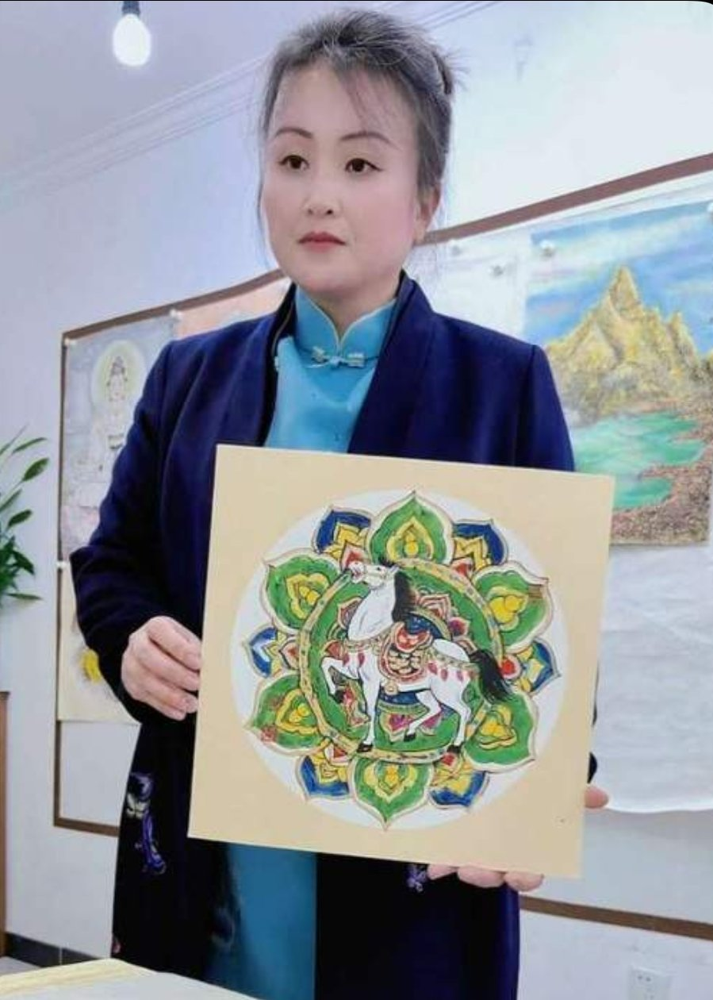

素
温素洁
关于
人物卷
童趣卷
恩师评语
名家合影
联系
EN
☰
中国画人物画家
温素洁
以笔墨写时代 · 以丹青传心声
素
向下探索
About the Artist
关于艺术家

艺
术
家
'">
笔墨千秋
丹青万代
画
Figure Paintings
人物卷
Childhood & Innocence
童趣卷
师
Teacher Testimonials
恩师评语
Photos with Masters
名家合影
×
‹
›